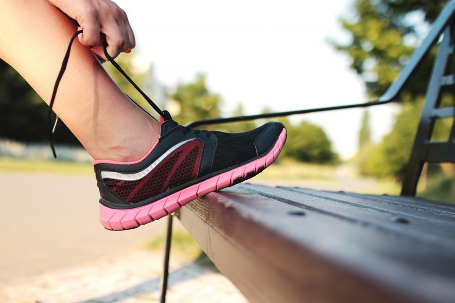

Does Horse Boost Work? What the Evidence Actually Shows
No study has tested the gummy itself. So we looked at the next best thing: the research on each ingredient, the doses involved and what realistic results look like.

Key takeaways
- No clinical trial has tested Horse Boost. Any claim about results comes from ingredient research, not product research.
- Maca and ashwagandha have the best ingredient evidence. Both were studied for weeks at doses far above what an 82 mg blend can hold.
- Realistic expectations are modest. At best, a mild lift in energy or interest over several weeks. Not a drug-like effect.
- Placebo responses are large in this field. Feeling better for a few days proves little either way.
- Erection problems can be an early sign of heart disease. If they're new or persistent, a doctor visit comes before any supplement.
Does Horse Boost work? Nobody can say for sure, because the HorseBoost gummy has never been tested in a published clinical trial. Its ingredients, mainly maca and ashwagandha, have modest evidence for libido and stress at doses far larger than an 82 mg blend can contain. Expect, at most, a mild effect.
That isn't the answer most product pages give, and it isn't meant to scare you off. It's what the evidence supports. In this article we look at what "working" could reasonably mean, what each ingredient's research shows, who might notice something, and the situations where a doctor visit is the smarter purchase. For the formula, price and refund details, read our Horse Boost review.

HorseBoost: check today's price
A once-daily strawberry men's vitality gummy with maca, muira puama, tribulus and horny goat weed. Sold only on the official site, with a 60-day money-back guarantee.
See the official price →Has HorseBoost been tested in a clinical trial?
Not that we could find. We searched for published trials of HorseBoost or Horse Boost gummies and found none, and the order page doesn't cite one. That's normal for supplements sold online. The law doesn't require supplements to prove they work before they're sold; it requires them to avoid disease claims and to be made under good manufacturing practices.
Without a product trial, three things stay unknown. First, whether the specific extracts used deliver the active compounds the research measured. Second, whether the combination does anything different from its parts. Third, how a gummy format affects stability over months on a shelf.
What would a proper trial look like? A few hundred men, randomly split between the gummy and an identical-looking placebo gummy, neither they nor the researchers knowing who got which, for 8 to 12 weeks. Outcomes would be measured with validated questionnaires such as the International Index of Erectile Function, plus fatigue and quality-of-life scales. That kind of study costs real money, which is one reason small supplement brands rarely run one.
So every statement about Horse Boost's effect is an inference. The inference can be reasonable, but it's still a step removed from proof.
What would "working" even mean for Horse Boost?
The bottle promises "natural vitality support," "daily energy support" and stamina. Those are soft, structure-function phrases. They describe feelings rather than measurable outcomes, which makes them hard to test and hard to disprove.
Here's a more useful way to frame it. If HorseBoost works for you, you'd expect some combination of the following after several weeks of daily use:
- A little more energy in the afternoon, without the jitter of coffee.
- More interest in intimacy than you had before you started.
- A sense of less stress, if ashwagandha is present at an effective amount.
- No change in blood tests like testosterone, because nothing in the blend is shown to raise it.
What wouldn't be realistic: changes in size, results within an hour, or an effect similar to prescription ED drugs. No ingredient on this label has shown that in humans, and a product promising it would be making claims supplements aren't allowed to make.
Why do some Horse Boost reviews sound so positive?
Search "horse boost reviews" and you'll find glowing stories next to complaints. Both can be sincere. Neither tells you much about the product.
Start with placebo. In trials of sexual-function treatments, a sizable share of men on the dummy pill report improvement, sometimes a third or more. Expectation matters a lot in this area, because anxiety and confidence directly affect arousal. A man who believes a gummy will help may genuinely do better, for reasons unrelated to maca or muira puama.
Then there's timing. People often start a supplement when they feel at their worst. Many symptoms drift back toward normal on their own, a pattern statisticians call regression to the mean. The supplement gets the credit.
Finally, selection. Reviews on sales pages are picked by the seller, and people with a strong reaction, good or bad, are the ones who write reviews at all. That's why we don't publish star ratings or testimonials. We can't verify them, and they can't replace a controlled comparison.
What does the ingredient research show?
Here's each ingredient with its best human evidence, the dose that was studied and how much HorseBoost can likely contain, based on the order in which the label lists them.
| Ingredient | Best human evidence | Dose studied | Likely in one gummy |
|---|---|---|---|
| Maca | Small RCTs: modest rise in self-reported desire | 1.5 to 3 g, 8 to 12 weeks | Part of the first ~57 to 77 mg |
| Ashwagandha | RCTs: lower perceived stress; small male studies | 300 to 600 mg extract | 5 mg or less |
| Tribulus | Reviews: no testosterone rise; mixed libido data | 250 to 750 mg extract | 5 mg or less |
| L-arginine | Some trials for mild ED, often with pine bark | 3 to 6 g | 5 mg or less |
| Muira puama | Old, uncontrolled reports | Not established | Likely the largest share |
| Catuaba | Animal and lab studies only | Not established | Part of the first group |
| Horny goat weed | Lab and animal studies only | Not established | 5 mg or less |
| Green tea extract | Heart and metabolic research, not libido | Varies | Part of the first group |
| Caffeine | Alertness at 40 mg and up | 40 to 200 mg | 5 mg |

Supplement labels must list blend ingredients from heaviest to lightest. Because caffeine is fifth at 5 mg, the four ingredients after it can each weigh no more than 5 mg. That's how we estimate the right-hand column. Our Horse Boost ingredients guide explains each estimate.
Why does dose decide everything here?
Pharmacology has an old rule: the dose makes the effect. Maca at 3 g a day for 12 weeks and maca at a few dozen milligrams aren't the same intervention, even though the label word is identical.
The blend's footnote says it's "equivalent to approximately 567 mg of dry powders," meaning the extracts are concentrated from a larger amount of raw plant. That narrows the gap for herbs like maca a little. It doesn't help ashwagandha at 5 mg or less, and it doesn't apply to L-arginine at all, since arginine isn't an extract.
Compare it with something familiar. If someone sold you a vitamin D product with a twentieth of the usual daily amount, you wouldn't expect it to fix a deficiency. Herbal ingredients follow the same logic, even though their labels make it harder to see. The research doses aren't arbitrary; they're the amounts at which a difference from placebo showed up.
Put another way, the formula's two best-supported ingredients are present, but probably not at the levels the supporting studies used. That's the single biggest reason to keep expectations low.
Who might notice something from Horse Boost?
A few groups are more likely to report a difference, for reasons that aren't all about the ingredients.
- Men who rarely take anything. Starting a daily routine often comes with other changes: better sleep, more attention to health. Those can matter more than the gummy.
- People sensitive to small amounts of caffeine. Five milligrams is tiny, but some people notice it.
- Men whose low drive is mostly stress. If ashwagandha is present in a meaningful amount, stress-related fatigue is where its evidence is strongest.
On the other side, men with diagnosed ED, diabetes, heart disease or low testosterone are the least likely to notice anything. Their problem has a physical cause that a small herbal blend isn't built to address.
Age plays a part too. Interest and energy change gradually with age for most men, and some of that is normal. A supplement won't reverse it. What it can do, at best, is take a small edge off fatigue on top of good habits.
When should you see a doctor instead of trying Horse Boost?
Erectile dysfunction is often one of the earliest signs of cardiovascular disease. The arteries supplying the penis are narrower than the coronary arteries, so they tend to show damage from plaque, high blood pressure or high blood sugar sooner. Studies have found ED can precede heart symptoms by a few years. That's a window for prevention that a supplement can quietly use up.
See a doctor rather than (or before) buying any supplement if:
- Erection problems are new, getting worse or happening most of the time.
- You also have chest pain, shortness of breath on exertion, or leg pain when walking.
- You have diabetes, high blood pressure or high cholesterol, or a family history of early heart disease.
- You have low mood, poor sleep, loud snoring or daytime sleepiness.
- You've started a new medication around the time the problem began.
Bring a list of every medication and supplement you take, including HorseBoost if you've started it. A doctor needs that list to rule out drug side effects, which are a common and fixable cause. Blood pressure drugs, antidepressants and some prostate medicines are frequent culprits.
A basic workup usually includes blood pressure, a lipid panel, blood sugar or HbA1c and sometimes a morning testosterone level. If a cause turns up, treating it often helps erections more than any product could. If low testosterone is a worry, our article on low testosterone in men lists the symptoms worth raising.
What actually helps energy and sexual health?
The best-supported tools are boring, cheap and slow. They also have better evidence than any herb on this label.
- Regular aerobic exercise. Trials link it to better erectile function scores, especially in men who were inactive.
- Losing excess weight. Weight loss improves blood vessel health and testosterone in overweight men.
- Stopping smoking and cutting back on alcohol. Both damage blood vessels and dampen sexual response.
- Sleep, and treating sleep apnea. Untreated apnea lowers testosterone and saps energy. See sleep apnea and memory for the warning signs.
- Prescription treatment when needed. Effective ED medicines exist, but they need a doctor because they interact with heart drugs.
None of these require a purchase, and most improve energy as well as sexual health. They're also the changes a doctor will usually recommend first, whatever else you decide to take.
How can you test Horse Boost fairly if you try it?
If you decide to try it, set it up so the result means something. A loose trial teaches you nothing.
- Write down a baseline first: energy, sleep, interest, on a simple 1 to 10 scale for a week.
- Take one gummy a day at the same time for at least 6 to 8 weeks, since the ingredient studies ran that long.
- Change nothing else during the trial, or you won't know what helped.
- Rate the same items weekly. Look for a steady trend, not one good day.
- Mark day 50 on your calendar so you can decide before the 60-day guarantee ends.
If nothing has shifted by then, it's fair to conclude it doesn't work for you and request a refund through the official process.
So, does Horse Boost work?
Horse Boost may give some men a mild sense of better energy or interest over several weeks. Nothing guarantees it, and the evidence can't separate any effect from placebo for this specific product. It doesn't treat erectile dysfunction, and it isn't a substitute for checking your heart, blood sugar and hormones.
The fairest summary is this: the product is real, the label is honest and the ingredient choices are traditional ones with some research. The doses and the missing product trial are what hold it back. Those are facts you can weigh for yourself, and they're the reason we'd describe it as a modest experiment rather than a solution.
If you're healthy, curious and comfortable treating it as an experiment with a refund window, it's a low-risk trial. If you have real symptoms, start with a doctor. You'll find more context in our men's health section.
HorseBoost: check today's price
A once-daily strawberry men's vitality gummy with maca, muira puama, tribulus and horny goat weed. Sold only on the official site, with a 60-day money-back guarantee.
See the official price →Frequently asked questions
Is Horse Boost FDA approved?
No. The FDA doesn't approve dietary supplements before sale. It regulates manufacturing standards and labeling, and the label carries the standard statement that its claims haven't been evaluated by the FDA.
How long does Horse Boost take to work?
There's no product data. The ingredient studies that found effects ran 6 to 12 weeks, so a fair trial is at least six weeks of daily use.
Can I take two Horse Boost gummies for a stronger effect?
The label says one gummy a day. Doubling up isn't tested and doubles the sugar and caffeine. Ask your doctor before going beyond the labeled serving.
Does Horse Boost work like Viagra?
No. Prescription ED drugs work within an hour by blocking an enzyme in blood vessels. Nothing in HorseBoost has been shown to do that in humans, and supplements can't legally claim to.
Are there real Horse Boost customer reviews?
We don't publish customer ratings because we can't verify them. Reviews on sales pages are chosen by the seller. Your own structured trial within the guarantee window will tell you more.
What if Horse Boost doesn't work for me?
Orders through the official site carry a 60-day money-back guarantee. Check the refund steps on the order page and request it before the window closes.
Is Vigor Boost more effective than Horse Boost?
They share the same 82 mg blend. Vigor Boost has 10 mg of caffeine against HorseBoost's 5 mg, so neither should outperform the other in any meaningful way.
Want to run your own fair test?
HorseBoost comes with a 60-day money-back guarantee on official orders, long enough for a proper trial. Check current prices on the official page.
See HorseBoost's official price →Related: Horse Boost review 2026 · Horse Boost ingredients explained · Low testosterone in men · Sleep apnea and memory